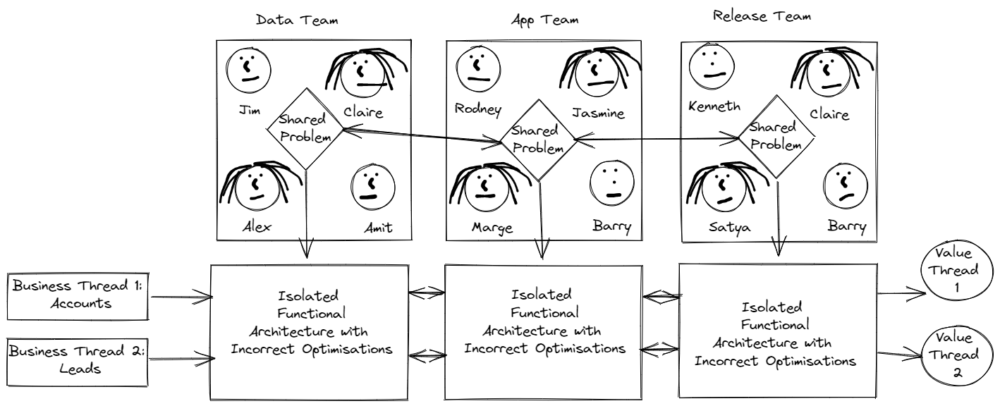

--- class: middle, center # Teams as a Service ## Team Configuration and Automated Deployment ## Anil Kerai and Richard Griffiths ### aka the hungovercoders <html> <img src="images/logo.png" width="300" height="300" /> </html> --- # Agenda 1. Importance of Teams 2. Team Configuration 3. DEMO - Generate Documentation & Team Model 4. Teams as a Service 5. Automation 6. DEMO - Automate Communication & Repository Framework 8. Why use this tooling? 9. What next? ??? --- # Importance of Teams Lets begin at the beginning... **Conways Law...** ??? --- # Conways Law! <html> <img src="images/beer.jpg" class="centre" /> </html> # Drink!!! ??? --- # Importance of Teams Lets begin at the beginning... **Conways Law** - "Any organization that designs a system (defined broadly) will produce a design whose structure is a copy of the organization's communication structure" Melvin E. Conway 1968 <html> <img src="images/conway.png" class="centre" /> </html> ??? Look at him the cheeky scamp (Conway), causing all this debate and mayhem even now... --- # Importance of Teams Lets begin at the beginning... **Conways Law** - "Any organization that designs a system (defined broadly) will produce a design whose structure is a copy of the organization's communication structure" Melvin E. Conway 1968 ## Let's break this down... ??? --- # Importance of Teams ## Why create a team? * Teams are setup so that members can collaborate easily on a problem. * Teams have a finite number of staff. * Teams have common internal team priorities. * Teams have common communication ceremonies. * Teams require common rights and tooling to a team common environment. * **Teams allow for multi-threaded organizational goals to be achieved.** * **In order to take advantage of multiple threads handovers should be limited.** ??? When the number of people in an organization gets too large then it is impossible for them all to work on one task. Teams are setup then to create pockets of people that can together work on smaller tasks within an organization. These pockets of people have a finite number of people so as to avoid too many people communicating with one another and having too many tasks conflicting with each other. Ideally these teams would be able to meet the tasks they are given which reflect the internal team priorities. The reason that a company setups teams is therefore so they can break down manageable workloads and distribute them amongst an organization. This allows an organization to have multiple threads at any one time if tasks are distributed and managed correctly. --- # Importance of Teams * Q1. If **Jim** is in a team with **Alex** and not in a team with **Rodney**, who is it likely that **Jim** is going to work with more often? * Q2. If **Rodney** is in a team with **Jasmine** and not in a team with **Jim**, who is it likely that **Rodney** going to work with more often? <html> <div style="text-align: center;"> </div> </html> ??? --- # Importance of Teams * Q1. If **Jim** is in a team with **Alex** and not in a team with **Rodney**, who is it likely that **Jim** is going to work with more often? Answer: **Alex** * Q2. If **Rodney** is in a team with **Jasmine** and not in a team with **Jim**, who is it likely that **Rodney** going to work with more often? Answer: **Jasmine** <html> <div style="text-align: center;"> </div> </html> ??? Rodney is the best example to focus on here. At first it might seem that well people will speak to one another anyway and this is an easy thing to overcome... but there are two opposing forces against Rodney speaking with Alex for example. It is not just the fact that Alex is in a different team, but Rodney is in his own team. Each team having their own internal priorities and ceremonies and methods etc means that it is never easy to speak to members in other teams, particularly if this is exarcebated by team members constantly having to speak to multiple other teams. The drag can become immense. This may seem obvious, but all the communication pathways multiplied across every individual mean that communication within a team should be far easier than across teams. --- # Importance of Teams If Jim needs something from Marge, and Marge needs something from Satya... The lead time to unblock Jim will be something like: ``` [lead time for three team communication] = [mean time for team 2 to acknowledge request] + [mean time for team 2 to understand request] + [mean time for team 2 to prioritize request] + [mean time for team 3 to acknowledge request] + [mean time for team 3 to understand request] + [mean time for team 3 to prioritize request] ``` <html> <div style="text-align: center;"> </div> </html> ??? --- # Importance of Teams * Too frequent cross team communication (handovers) will lead to drag and frustration. * Team members will therefore default to solve a problem within a team as much as possible. <html> <div style="text-align: center;"> </div> </html> ??? --- # Importance of Teams * Team setup then influences the problems that can be easily solved within a team and will produce an architecture reflecting that. * If these domains are functional then business value cannot be achieved within a single team. * Multi threaded business goal achievements are lost. <html> <div style="text-align: center;">  </div> </html> ??? --- # Importance of Teams * Well designed teams around business problems. * Multi threaded business goal achievements are now met. <html> <div style="text-align: center;"> </div> </html> ??? --- # Importance of Teams ## So we can conclude... ### Just as much thought should go into our communication structure and teams, as that is given to our technical architecture <html> <div style="text-align: center;"> <img src="images/TeamTopol.jpg" width="20%" height="20%" /> </div> </html> ### Therefore why not store teams configuration as code...? ??? --- # Teams Configuration ## Designing teams is not simple * Modern technology practices emphasize the importance of communication and teams * Teams may own multiple domains and products * Techniques such as event storming help us understand business problems and appropriate domain boundaries <html> <div style="text-align: center;"> <img src="images/EventStormMiro.png" width="70%" height="50%" /> </div> </html> ??? --- # Teams Configuration ## Store Teams Design as Code <html> <div style="text-align: center;"> <img src="images/TeamsJSONFiles.png" width="70%" height="50%" /> </div> </html> ??? Preliminary schema held in JSON. Can control properties such as expected values in enum list or maximum number of members to control team member limits for example. --- # Teams Configuration ## Store Teams Design as [Code](../teams) ```json { "overview": { "name": "Conversions", "mission": "Providing users with a view of products to select and track the progress of these leads through to purchase.", "current_work": [ "Investigating API integration with sample of partners for better sales notifications", "Allowing customers to sort panel by product expiry date" ], "teams_working_with": [ "CRM", "Product" ], ``` ... ### Each team can control their own properties ??? --- # Teams Configuration ### All team properties governed by [common team JSON schema](../teams/schema) #### Current Team Schema Properties * **Overview** - name, mission, backlog, teams working with, wiki, calendar * **Members** - name, roles, skills * **Communication** - medium, channels * **Product** - name, purpose, SLA, customers, codebase ```json "name": { "$ref": "#/$defs/teamname_list", "description": "The name of the team which should also be used in tagging resources for ownership identification" }, "mission": { "type": "string", "description": "The mission of the team." }, ``` ... ??? Preliminary schema held in JSON. Can control properties such as expected values in enum list or maximum number of members to control team member limits for example. --- # DEMO - Generate Documentation & Team Model * Utilising [ReadMe](../ReadMe.md) instructions can generate.. * Team Documentation - utilzing **python json2table** * Overall Team Model Graph - utilzing **python networkx** <div class="row"> <div class="column"> <img src="images/TeamModel.png" alt="TeamModel" style="width:100%"> </div> <div class="column"> <img src="images/TeamModel.png" alt="TeamModel" style="width:100%"> </div> </div> ??? --- # Teams as a Service (TaaS) ### In order to get our business threads running as quickly as possible we require... * #### Layers as a Service (LaaS) * #### Communication as a Service (CaaS) * #### Repositories as a Service (RaaS) * #### Environment as a Service (EaaS) * #### Deployment as a Service (DaaS) * #### Governance as a Service (GaaS) ### Each of these can be derivatives of the main team configuration schema ??? Anil talk about TaaS Layers - include AD security groups and networking. Communications - slack channels, email distribution groups, teams teams & channels Repositories - code repos, work management, knowledge base Environment - Azure subs, google big query projects, AWS subs Deployment - service connections linked to environments Governance - Azure policies, e.g. require team tag, best practices baked into estate to allow teams to deploy and have automated feedback --- # Automation ### Python code performs Automation ### Service module configuration held in JSON code ```json { "modules": { "slack": { "config": { "API_TOKEN": "" }, "features": [ { "name": "channels" } ] }, "azdevops": { "config": { "PAT_TOKEN": "", "Organisation": "" }, ``` ??? Anil - Demos the creation of slack channels based on schema. --- # DEMO - Automate Communication & Repository Framework (CaaS & RaaS) <div class="row"> <div class="column"> <img src="images/Slack.png" alt="Snow" style="width:70%"> </div> <div class="column"> <img src="images/DevOps.png" alt="Forest" style="width:175%"> </div> </div> ??? Anil - Demos the creation of slack channels based on schema. --- # Why use this tooling? 1. What is the power of the technology? 2. What limitations does the technology diminish? 3. What rules enabled us to manage this limitation? 4. What new rules will we need? ??? Griff to talk through goldratts principals --- # Why use this tooling? 1. What is the power of the technology? * Automatically generates assets required for a team to deliver value from a single configuration. 2. What limitations does the technology diminish? 3. What rules enabled us to manage this limitation? 4. What new rules will we need? ??? --- # Why use this tooling? 1. What is the power of the technology? * Automatically generates consistent assets required for a team to deliver value from a single configuration. 2. What limitations does the technology diminish? * Reduces lead time for team member joining from 2 weeks to 1 day. * Reduces lead team for team creation from "unknown" to 1 day. 3. What rules enabled us to manage this limitation? 4. What new rules will we need? ??? --- # Why use this tooling? 1. What is the power of the technology? * Automatically generates consistent assets required for a team to deliver value from a single configuration. 2. What limitations does the technology diminish? * Reduces lead time for team member joining from 2 weeks to 1 day. * Reduces lead team for team creation from "unknown" to 1 day. 3. What rules enabled us to manage this limitation? * New starters expected to be unproductive in first 2 weeks and so given limited work. * Can not create consistent teams and so no need to formalize a team team design. 4. What new rules will we need? ??? --- # Why use this tooling? 1. What is the power of the technology? * Automatically generates consistent assets required for a team to deliver value from a single configuration. 2. What limitations does the technology diminish? * Reduces lead time for team member joining from 2 weeks to 1 day. * Reduces lead team for team creation from "unknown" to 1 day. 3. What rules enabled us to manage this limitation? * New starters expected to be unproductive in first 2 weeks and so given limited work. * Can not create consistent teams and so no need to formalize a team design. 4. What new rules will we need? * New starters can be given work and deliver value on day one. * We can can create a well designed team implementation as we have an easy, formal and well governed mode to do so. ??? --- # What next? * **LaaS** - generate activity directory groups "{Team Name} Team" with members allocated. * **EaaS** - Generate Cloud environments for {Team Name} and apply AD groups. * **DaaS** - Generate service connections to environment for {Team Name} and link with Devops deployment. * **CaaS** - Create slack team handles based on {team name} and team members. * **GaaS** - Enforce resource tagging with policies established from well known team names configured in source. * Link team tag names of resources to team configuration to understand ownership of the estate more clearly. ## Automating all this drastically reduces lead time for new starters and business thread throughput, constrained by a well governed model. ???